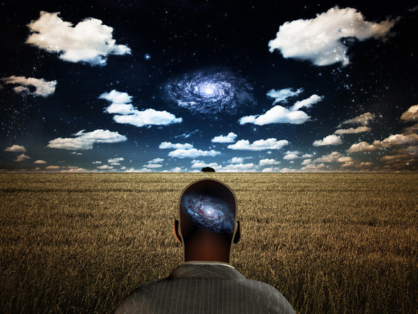
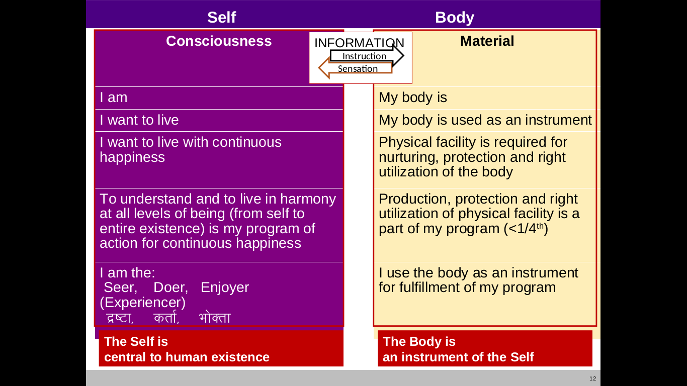
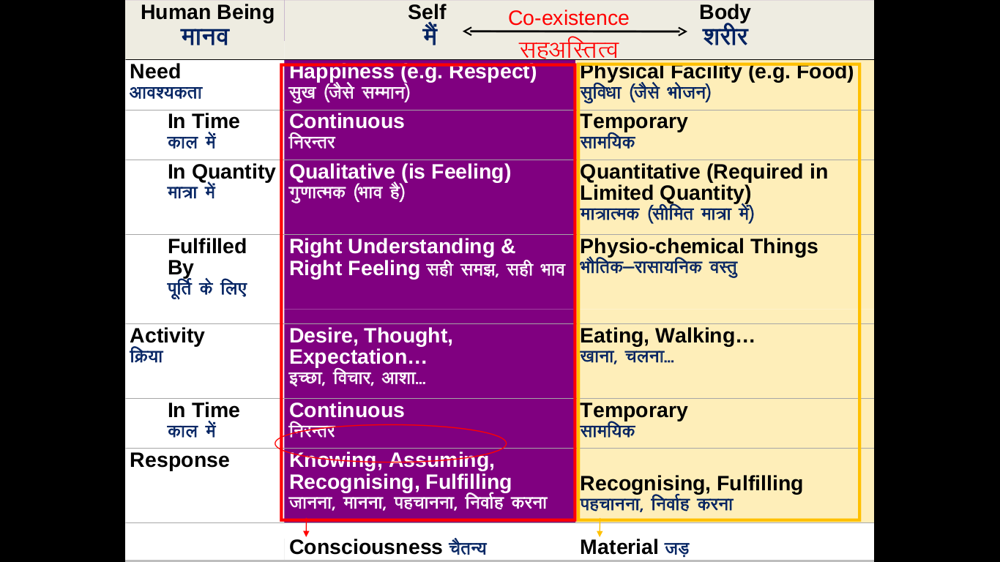
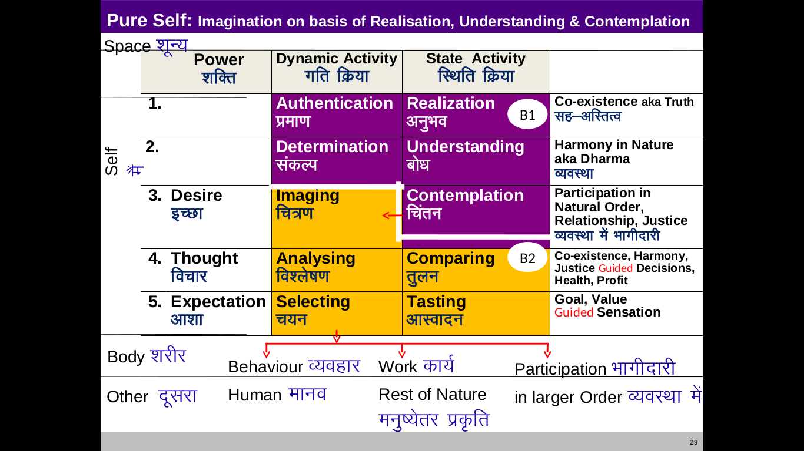

Who Am I
The answer can be given at two levels
A. I am Existence itself.
B. I am a conscious unit in Existence, here on Earth as a human.
A. As Existence itself
- I am all-that-is.
- I am the only thing that exists (also called Truth).
- I am indivisible. All my parts are interrelated, interconnected, interdependent.
- I am experiencing myself through infinite conscious units.
- I am expressing myself as infinite material and conscious units.
- I am eternal, infinite, omnipotent.
- I am The present. I am also the arrow of time.
Everything is connected and, but one-thing only!
Is a river separate from the sea, or from another river?
The individual I (Life) is an inseparable constituent part of the BIG I (Existence) which is the only thing that exists.
Existence as co-existence contains energy both unaware (unconscious) and aware (conscious). Life is a unit of energy aware of (its) Existence and experiencing/expressing in the same.
A unit of Life and also every atom or free energy behaves like a wave swimming with other waves in the infinite sea of Existence. Every atom affects everything else. Every point in space is affected by every other atom in existence at any point in time. Looking microscopically all particles have wave like forms only. All waves are intricately connected & weaved together as unique expressions & patterns in Existence composed of the fabric of energy. Each wave affects all the rest. They all exist together. They are but ONE & ONLY inseparable THING.
Everything is connected together. Existence is in form of inseparable, interconnected co-existence.
Life exists intricately connected with the rest as co-existence and with a body to experience the sea and express itself as part of the sea. The substance that constitutes any Life is the same substance that constitutes every particle, wave or Life in Existence. The same substance that is manifesting as ‘others’ or ‘rest of Existence’ whether material or conscious, is manifesting as ‘me’. All is one infinite sea of which every part is inseparably connected to all other parts. Every atom and every Life affects the rest of infinite Existence and is in turn affected by the entirety of the rest of it. This is simply understandable by experience, observation and thought. Even science attests to this fact.
So for Life to feel alone and separate from ‘the rest’ is but an illusion only.
B. As Life, as an individual unit of Existence,

I am aware and consciously experiencing the BIG ME (Existence itself). I am present here in the human form as a unique expression of the REAL ME.
The individual “I” that I sense, feel and live can be called Life. Life is what senses, feels and lives as the individual Self. Life (or self) is the phenomenon that experiences and expresses the “I-ness”.
You and I are units of Life each. So is every human and animal on Earth whose body has a brain, nervous system, at least two senses and can learn and evolve within one lifetime. It is very probable that Life may exist in infinite forms in other realms which are not as densely physical and bio-organic as Earth. Here we will focus on Earth and on our existence on Earth in human form right here, right now.
The fundamental truth on which every thinking human can agree is that since we exist in Existence (in form of coexistence), the real you and real me must be made of the same fabric from which entire Existence is made. And that fabric is energy itself. Hence, each Life is but a-unit-of-energy, a part of Existence, which has become conscious of itself and is experiencing, learning and interacting with the Existence (itself) consciously.
Given that we can agree on the fundamental truth of Oneness, there is another truth secondary from that on which it is not so hard to agree either.
What am I as a human?
A human is Life with a human body. A human is Existence experiencing itself through human form. A human has the capability to realise & understand the interconnectedness of all co-existence as one and only Existence.
No matter what is our belief systems are we can agree that broadly our individual existence as a human (and even of animals) is of two parts. The nomenclature is secondary. To understand the objects and their functions is of primary importance.
Every human or even an animal’s existence is broadly of two components.
- The body which is operated by the self (aka life), and through which the self percieves the world and also acts in the world. On Earth, the body is made of bio-organic matter. A human body is made of trillions of unconscious cells which constitute the nervous system, brain and rest of the body, and together they act as a vessel for consciousness.
- Life, which is the doer, enjoyer and seer with the body. The self is an indestructible combination of a soul (nucleus) and a mind (four layers around the nucleus).

The difference between the body and the self 
The mind and soul together (and inseparably) constitute Life. The body is the vehicle for Life to experience, learn and express (act) in Existence. A human is Life with a human body.
The soul and four layers of the mind
| Layers from inside out | Name | Inward activity | Outward activity | Force | Functions in details |
|---|---|---|---|---|---|
| Nucleus | Soul/heart | Experiencing/Witnessing/Realization | Giving evidence of (expressing) Truth | Evidentiality of Truth | The experiencer of all experiences. The benefactor of the mind. |
| 1 | Mind/Budhdhi | Comprehension/Understanding of Truth | Resolve/determination to live with the truth that is understood. | Harmony | Seeks to understand Truth/harmony in its totality based on input from all other layers of the mind, with final attestation of truthfulness from the soul. Once understood, it resolves to live or act based on the new understanding. It serves as the benefactor of the outer layers of the mind. |
| 2 | Mind/Chitta | Contemplation/evaluation/feeling the value of a reality/introduction to a reality | acceptance of a statement as fact/visualisation of truth, reality, actuality as set of all acceptances held/holding the collection of all the acceptances/Memory | Desire | Its inward activity is contemplation which is about introduction to realities/feeling the value of realities w.r.t harmony. Its outward activity is projection of the imagery. Desire, memory, assumptions, communication etc. arise from |
| 3 | Mind/Vritti | Analysis | Comparision | Thinking | The likes/dislikes are its outward activities based on comparison of tastes of different choices. Its inward activities include breaking down and analysis of any statement or fact. |
| 4 | Mind/Mun | Tasting choices | Making choices | Hope | It is attached to the body, percieves through it and gives orders to it to move or do something. It tastes not just through the body but also catches subtle tastes of non-physical experiences. |

An unevolved Life uses only the Mun, Vritti in full and Chitta in half (for visualisation). Contemplation, comprehension, resolution, Life learning and its expression is missing.
Life grows with experience and understanding
Life, whether in form of an ant or a human is on a journey of experience where it learns and grows. The more it learns about its nature the better become its experiences. Life is free from physical forces of the universe like gravity. But till it is fully evolved it is bound by the force of desire (to experience). As Life experiences it understands how Existence is, how nature works, and it grows. It realises its true nature as infinite and eternal Existence having (having had and meant to forever have) infinite experiences, through uncountable forms. With manifestation of this knowledge in its mind and soul, Life finally attains eternal satisfaction and peace. As the fan of desires slowly comes to a halt, Life starts to shine forth as source of joy in its existence as co-existence. As Life matures it falls in love with all of Existence (its REAL SELF).
Experience and understanding is knowledge. Knowledge of Existence manifests as love because the fabric of Existence itself is love which is but energy itself. Knowledge is useful.
Anyone can grow
Haven’t you grown since you were born? (Not in the body, but as YOU) Are you not more practical, more mature, more wise in your handling of yourself & the world then what you were before (at least in some ways, if not all)? Growth is about dropping the false personalities and shining forth as how your real individuality (a form of Existence itself) is.
For full growth Life needs to apply the whole of itself
Only the whole can understand the whole of itself. Life can not fully grow by using only a part of itself. In an unevolved Life (only half of) the mind is the master. In an evolved Life the soul is the master and 100% of the mind is at its service. Today most people are living by less than half of their mind. If we were living in a world where we lived with our souls as the master and the full mind as its loyal servant, we would all enjoy an incomparably better experience together. This is what Lifemaker is about.
What is the proof of growth, wisdom or maturity?
The proof of maturity lies in the totality of one’s living i.e. how one lives on a day to day basis. How one thinks, speaks, behaves, works and acts is a reflection of one’s total understanding or maturity. In the inner experience of Life, proof of its maturity is the happiness, satisfaction, peace and bliss it experiences, in the love it feels for everyone, and the outer manifestation of maturity is how it lives selflessly and resolved with the world.